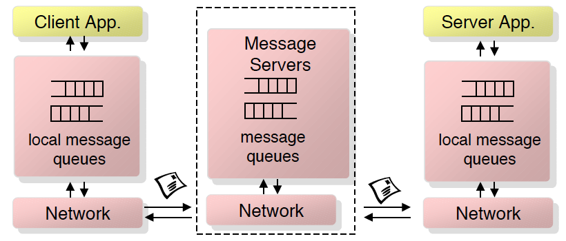

Lektion 3 - Middleware
Problems
- Different Languages
- Different APIs
- Diffrennt OSs
- Different Datatypes
- Different Network protocols
Solution: Middleware
- Layer between OS and distributed Applications
- Hides complexity and heterogenity of distributed system
- Bridges gap between low.leel OS communications and programming languages
- provides common programming abstraction
Supports:
- Mapping and conversion of common types
- (De)serialization of values
- protocol handling, failure handling, Quality of service
- transactions
- access control, authentication
- interface description language
Mapping programming language types

Serialization and Deserialization
- The concrete values and data structures have to send over the "wire"
- They need to be streamed in and out
Naming, Location, Service discovery
Before a server service can be called its physical location (machine) has to be found
Protocol handling, failure handling, QoS
- Remote call is much more error prone
- Some error can be handled by infrastructure
Can be resent again, but that might be a problem for example for bank transactions
=> needs to be idempotent
Transactions
- often DB access and transactions are involved
- for consistency this requires that Two-Phase-Commit (2PC) is supported
- Transaction Context has to be piggybacked with the data
Access Control, Authentication
- Credentials have to be checked
- User Id has to be piggybacked with each call
Lifecycle Service
- Server Services are started on demand
- some instance has the "wake them up"
Middleware Dimensions

Type of middleware to chose
- the one that meets requirements!
Tradeoffs:
- Simple e.g. language specific -> bound to specific programming language
- Simple e.g. request/response -> no asynchronous calls
- Simple e.g. vendoc specific -> proprietary, vendor locking
Choice of Middleware
- has huge impacts on architecture of all applications
- cannot be changed easily -> lives for YEARS
- has to last several yoears or decates
- will be outdated sometime, vendor supports expires -> plan migration to other Middleware
Remote procedure calls
- Language-level pattern of function call
- Quality of service are almost not supported
- the call was blockend, which means that the client waits for the server to answer
- you need to handle the threading yourself
Object-Oriented Middleware
- Objects can be local or remote
- Objects references can be local or remote
- Remote objects have visible remote interfaces

Message-Oriented Middleware
- Cimmunication using (asynchronous) message passing
- Messages stored in message queues
- Various assumptions about message content

- Must be and is reliable
- Error handling is always hard with asynchronous calls
Event-Based Middleware aka. Pub/Sub
- Publishers pubish events
- Subscribers express interestin in events
- Event Service notifies interested subscribers of published events
- Events can have arbitrary content (typed) or name/value pairs
Interface Description Language (IDL)
- Wie beim RPC steht im Zentrum die Definition des Server-Interfaces.
- Die Sprache IDL ist CORBA-spezifisch und „unabhängig“.
- IDL ist selbst objektorientiert (Vererbung).
- Aus einem Stück IDL werden die konkreten Elemente für die jeweilige Plattform generiert.
- Ein ORB kann sowohl IDL-Definitionen als auch deren dazugehörige Implementationen „verwalten“
module SomeDBApp {
module services {
struct Person {
string name;
int ahvnr;
long balance
}
exception AlreadyOnLine{};
exception Duplicate{};
interface Server {
boolean init(in string sName) raises(AlreadyOnLine);
}
interface someLookup {
void doit(in string name, out Person p) raises(Duplicate);
}
}
...
}